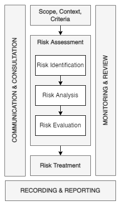

Risk Management
Contents
Risk Management#
Principles#
The purpose of risk management (RM) is the creation and protection of value.
It improves performance, encourages innovation, and supports the achievement of objectives.
The principles
guide the characteristics of effective and efficient RM, communicating its value and explaining its intention and purpose. \
are the foundation for managing risk and should be considered when establishing the organization’s RM framework and processes.
These principles should enable an organization to manage the effects of uncertainty on its objectives.
Effective RM requires the following elements and can be further explained as follows.
Principle |
Description |
|---|---|
Integrated |
RM is an integral part of all organizational activities |
Structured and Comprehensive |
A structured and comprehensive approach to RM contributes to consistent and comparable results |
Customized |
The RM framework and process are customized and proportionate to the organization’s external and internal context related to its objectives |
Inclusive |
Appropriate and timely involvement of stakeholders enables their knowledge, views, and perceptions to be considered. This results in improved awareness and informed RM |
Dynamic |
Risks can emerge, change or disappear as an organization’s external and internal context changes. RM anticipates, detects, acknowledges, and responds to those changes and events in an appropriate and timely manner |
Best available information |
The inputs to RM are based on historical and current information and future expectations. RM considers any limitations and uncertainties associated with such information and expectations. Information should be timely, transparent, and available to relevant stakeholders |
Human and cultural factors |
Human behavior and culture significantly influence all aspects of RM at each level and stage |
Continual improvement |
RM is continually improved through learning and experience |
Framework#
Process#
General#
The RM process involves
systematically applying policies, procedures, and practices to communicating and consulting,
establishing the context, and
assessing, treating, monitoring, reviewing, recording, and reporting risk.
This process is illustrated in Figure 1.
 |
|---|
Figure 1 — Process |
Communication & Consultation#
The purpose of communication and consultation is to assist relevant stakeholders in understanding
risk,
the basis on which decisions are made, and
why particular actions are required.
Communication promotes awareness and understanding of risk, whereas consultation involves obtaining feedback and information to support decision-making.
Close coordination between the two should facilitate the factual, timely, relevant, accurate, and understandable exchange of information, taking into account
the confidentiality and integrity of information, and
the privacy rights of individuals.
Communication and consultation with appropriate external and internal stakeholders should occur within and throughout all steps of the RM process.
Communication and consultation aim to:
bring different areas of expertise together for each step of the RM process;
ensure that different views are appropriately considered when defining risk criteria and when evaluating risks;
provide sufficient information to facilitate risk oversight and decision-making;
build a sense of inclusiveness and ownership among those affected by risk.
Scope, Context, and Criteria#
General#
The purpose of establishing the scope, context, and criteria is to customize the RM process, enabling effective risk assessment and appropriate risk treatment.
Scope, context, and criteria involve
defining the scope of the process, and
understanding the external and internal context.
Defining the Scope#
The organization should define the scope of its RM activities.
As the RM process may be applied at different levels (e.g. strategic, operational, programme, project, or other activities), it is important to be clear about
the scope under consideration,
the relevant objectives to be considered, and
their alignment with organizational objectives.
When planning the approach, considerations include:
objectives and decisions that need to be made;
outcomes expected from the steps to be taken in the process;
time, location, specific inclusions, and exclusions;
appropriate risk assessment tools and techniques;
resources required, responsibilities and records to be kept;
relationships with other projects, processes, and activities.
External and Internal Context#
The external and internal context is the environment in which the organization seeks to define and achieve its objectives.
The context of the RM process
should be established by understanding the external and internal environment in which the organization operates, and
should reflect the specific environment of the activity to which the RM process is to be applied.
Understanding the context is important because:
RM takes place in the context of the objectives and activities of the organization;
organizational factors can be a source of risk;
the purpose and scope of the RM process may be interrelated with the organization’s objectives as a whole.
The organization should establish the RM processes in external and internal contexts by considering the factors mentioned earlier.
Defining Risk Criteria#
The organization should
specify the amount and type of risk it may or may not take relative to objectives,
define criteria to evaluate risk’s significance, and support decision-making processes. \
Risk criteria should
be aligned with the RM framework and customized to the specific purpose and scope of the activity under consideration,
reflect the organization’s values, objectives, and resources,
be consistent with policies and statements about RM,
be defined considering the organization’s obligations and stakeholders’ views, and
be dynamic and continually reviewed and amended, if necessary.
To set risk criteria, the following should be considered:
the nature and type of uncertainties that can affect outcomes and objectives (both tangible and intangible);
how consequences (both positive and negative) and likelihood will be defined and measured;
time-related factors;
consistency in the use of measurements;
how the level of risk is to be determined;
how combinations and sequences of multiple risks will be taken into account;
the organization’s capacity.
Risk Assessment#
Risk assessment is the overall process of risk identification, analysis, and evaluation.
Risk assessment should be conducted systematically, iteratively, and collaboratively, drawing on the knowledge and views of stakeholders.
It should use the best available information, supplemented by further inquiry.
General#
Risk Identification#
The purpose of risk identification is to find, recognize and describe risks that might help or prevent an organization from achieving its objectives.
Relevant, appropriate and up-to-date information is important in identifying risks.
The organization can use various techniques to identify uncertainties affecting one or more objectives.
The following factors, and the relationship between these factors, should be considered:
tangible and intangible sources of risk;
causes and events;
threats and opportunities;
vulnerabilities and capabilities;
changes in the external and internal context;
indicators of emerging risks;
the nature and value of assets and resources;
consequences and their impact on objectives;
limitations of knowledge and reliability of information;
time-related factors;
biases, assumptions, and beliefs of those involved.
The organization should identify risks, whether or not their sources are under its control.
Consideration should be given that there may be more than one type of outcome, resulting in various tangible or intangible consequences.
Risk Analysis#
Risk analysis aims to comprehend the nature of risk and its characteristics, including, where appropriate, the level of risk.
Risk analysis involves a detailed consideration of uncertainties, risk sources, consequences, likelihood, events, scenarios, controls, and their effectiveness.
An event can have multiple causes and consequences and can affect multiple objectives.
Risk analysis can be undertaken with varying degrees of detail and complexity, depending on the purpose of the analysis, the availability and reliability of the information, and the resources available.
Analysis techniques can be qualitative, quantitative, or a combination of these, depending on the circumstances and intended use.
Risk analysis should consider factors such as:
the likelihood of events and consequences;
the nature and magnitude of consequences;
complexity and connectivity;
time-related factors and volatility;
the effectiveness of existing controls;
sensitivity and confidence levels.
The risk analysis may be influenced by any divergence of opinions, biases, perceptions of risk, and judgments.
Additional influences are the quality of the information used, the assumptions and exclusions made, any limitations of the techniques, and how they are executed.
These influences should be considered, documented, and communicated to decision-makers.
Highly uncertain events can be difficult to quantify.
This can be an issue when analyzing events with severe consequences.
In such cases, using a combination of techniques generally provides greater insight.
Risk analysis provides input to risk evaluation, decisions on whether risk needs to be treated and how, and the most appropriate risk treatment strategy and methods.
The results provide insight into decisions, where choices are being made, and the options involve different types and levels of risk.
Risk Evaluation#
The purpose of risk evaluation is to support decisions.
Risk evaluation involves comparing the risk analysis results with the established risk criteria to determine where additional action is required.
This can lead to a decision to:
do nothing further;
consider risk treatment options;
undertake further analysis to better understand the risk;
maintain existing controls;
reconsider objectives.
Decisions should take account of the wider context and the actual and perceived consequences to external and internal stakeholders.
The outcome of risk evaluation should be recorded, communicated, and then validated at appropriate levels of the organization.
Risk Treatment#
General#
The purpose of risk treatment is to select and implement options for addressing risk.
Risk treatment involves an iterative process of:
formulating and selecting risk treatment options;
planning and implementing risk treatment;
assessing the effectiveness of that treatment;
deciding whether the remaining risk is acceptable;
if not acceptable, take further treatment.
Selection of Risk Treatment Options#
Selecting the most appropriate risk treatment option(s) involves balancing the potential benefits derived from the achievement of the objectives against costs, effort, or disadvantages of implementation.
Risk treatment options are not necessarily mutually exclusive or appropriate in all circumstances. Options for treating risk may involve one or more of the following:
— avoiding the risk by deciding not to start or continue with the activity that gives rise to the risk;
— taking or increasing the risk to pursue an opportunity;
— removing the risk source;
— changing the likelihood;
— changing the consequences;
— sharing the risk (e.g. through contracts, buying insurance);
— retaining the risk by informed decision.
Justification for risk treatment is broader than solely economic considerations and should consider all of the organization’s obligations, voluntary commitments, and stakeholder views.
The selection of risk treatment options should be made per the organization’s objectives, risk criteria, and available resources.
When selecting risk treatment options, the organization should consider stakeholders’ values, perceptions, and potential involvement and the most appropriate ways to communicate and consult with them.
Though equally effective, some risk treatments can be more acceptable to stakeholders than others.
Even if carefully designed and implemented, risk treatments might not produce the expected outcomes and could produce unintended consequences.
Monitoring and review need to be an integral part of the risk treatment implementation to give assurance that the different forms of treatment become and remain effective.
Risk treatment can also introduce new risks that need to be managed.
If there are no treatment options available or if treatment options do not sufficiently modify the risk, the risk should be recorded and kept under ongoing review.
Decision makers and other stakeholders should be aware of the nature and extent of the remaining risk after risk treatment.
The remaining risk should be documented and subjected to monitoring, review, and, where appropriate, further treatment.
Preparing and Implementing Risk Treatment Plans#
The purpose of risk treatment plans is to specify how the chosen treatment options will be implemented so that arrangements are understood by those involved and progress against the plan can be monitored.
The treatment plan should identify the order in which risk treatment should be implemented.
Treatment plans should be integrated into the management plans and processes of the organization in consultation with appropriate stakeholders.
The information provided in the treatment plan should include:
the rationale for selection of the treatment options, including the expected benefits to be gained;
those who are accountable and responsible for approving and implementing the plan;
proposed actions;
resources required, including contingencies;
performance measures;
constraints;
required reporting and monitoring;
when actions are expected to be undertaken and completed.
Monitoring & Review#
The purpose of monitoring and review is to assure and improve the quality and effectiveness of process design, implementation, and outcomes.
Ongoing monitoring and periodic review of the RM process and its outcomes should be a planned part of the RM process, with responsibilities clearly defined.
Monitoring and review should take place in all stages of the process.
Monitoring and review include planning, gathering and analyzing information, recording results, and providing feedback.
The results of monitoring and review should be incorporated throughout the organization’s performance management, measurement, and reporting activities.
Recording & Reporting#
The RM process and its outcomes should be documented and reported through appropriate mechanisms.
Recording and reporting aim to:
communicate risk management activities and outcomes across the organization;
provide information for decision-making;
improve risk management activities;
assist interaction with stakeholders, including those with responsibility and accountability for risk management activities.
Decisions concerning the creation, retention, and handling of documented information should consider but not be limited to their use, information sensitivity, and the external and internal context.
Reporting is an integral part of the organization’s governance and should enhance the quality of dialogue with stakeholders and support top management and oversight bodies in meeting their responsibilities.
Factors to consider for reporting include, but are not limited to:
differing stakeholders and their specific information needs and requirements;
cost, frequency, and timeliness of reporting;
method of reporting;
relevance of the information to organizational objectives and decision-making.